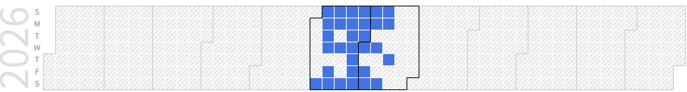

Jiwon Jo (Combined Graduate Student)
Graduate Student (M.S), Embedded System-on-Chip Integrator |
Repository Commit History
|
 |
Introduction
Full Bio Sketch
Mr. Jo is currently pursuing his undergraduate degree in Electronics Engineering at Kyungpook National University, Daegu, Republic of Korea. His research interests focus on hardware-software co-design, including System-on-Chip (SoC) architectures, embedded systems, edge computing systems, and AI accelerators. His work focuses on addressing memory bottlenecks and exploiting runtime execution characteristics to improve system performance and resource utilization. His research interests include adaptive resource management, memory-aware optimization techniques, and accelerator architectures for AI and edge systems.
Research Topic
Compact CPU-Integrated CNN Acceleration Architecture by Streamlining Memory Access for Concurrent Neural Processing
 The currently widely used fire suppression system is the sprinkler. When a fire occurs and the temperature sensor exceeds the threshold, the sprinkler operates. Depending on the environment, this method may take a long time for the sprinkler to operate from the fime the fire occurs. As an alternative to this problem, I propose a fire detection, notification, and suppression system using AI. Using AI, immediate detection, notification and suppression are possible.
The currently widely used fire suppression system is the sprinkler. When a fire occurs and the temperature sensor exceeds the threshold, the sprinkler operates. Depending on the environment, this method may take a long time for the sprinkler to operate from the fime the fire occurs. As an alternative to this problem, I propose a fire detection, notification, and suppression system using AI. Using AI, immediate detection, notification and suppression are possible.
Convolutional Neural Networks (CNNs) require intensive computation and frequent memory access, which can lead to significant performance bottlenecks in resource-constrained systems. To address these challenges, this study proposes a compact RISC-V-based CNN accelerator integrated with a CPU as a co-processor. The proposed architecture reduces memory overhead through a streaming-based dataflow and on-the-fly data generation while enabling continuous neural processing with a compact buffer structure. The accelerator employs weight-stationary systolic arrays and loosely coupled controllers to improve data reuse and overlap memory access with computation. By allowing the CPU and accelerator to operate concurrently, the proposed design improves computational efficiency while reducing memory access costs. This work focuses on efficient hardware architectures for AI acceleration, particularly in systems where memory bandwidth and resource utilization are critical design constraints.
Publications
Journal Publications (SCI 0, KCI 0)
Conference Publications (Intl. 1)
Jiwon Jo and Daejin Park. Compact CPU-Integrated CNN Acceleration Architecture by Streamlining Memory Access for Concurrent Neural Processing In IEEE COOLChips 2026, 2026.
Participation in International Conference
IEEE COOLChips 2026, Tokyo, Japan
Last Updated, 2026.06.17